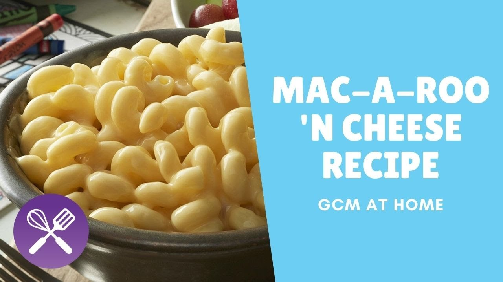

Outback Steakhouse Mac a Roo and Cheese Copycat

A mac n cheese recipe that copies Outback's kid's mac a roo n cheese with a twist!
This recipe sets out to imitate Outback's kid's mac n cheese. It is flavorful, creamy, and a crowd pleaser
It can be modified slightly to also pack an extra spice behind the creamy cheese flavor if this is desired.
In addition, I typically make this dish with a smoked paprika which really adds that steakhouse smokey flavor.
If this is not something that you enjoy, it can easily be substituted for standard paprika to bring out more of the cheese flavors.
This dish can be served as a side dish or as a whole meal for a mac n cheese night, it typically makes enough for 4 people if served as a main dish.
The ingredients can be halved if a side dish is desired.
Ingredients
- 16 oz pasta of choice, I usually use Cellentani as it is more of a firm noodle
- 1/4 cup chicken broth
- 16 oz velveeta cheese
- 1 cup half and half
- 1/2 cup of shredded cheddar cheese
- 1 tsp smoked paprika
- 1/2 tsp cayenne pepper** less can be used if this is too spicy.
- Salt and pepper to taste
Steps
- Take all of your noodles and add them to a large pan of boiling salted water. Cook until they are Al Dente
- Once the noodles are close to being done, add the cut up Velveeta cheese, cheddar cheese, half and half, chicken broth, and seasonings to a seperate larger pan.
- Melt the cheeses, and drain the noodles.
- Add all the noodles to the pan with the melted cheese sauce. Stir and Enjoy!